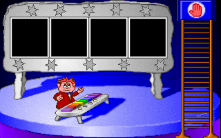
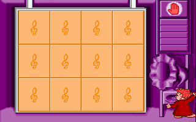
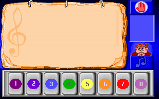
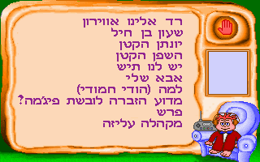
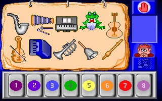
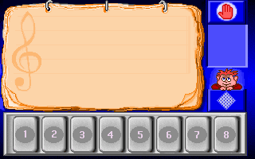
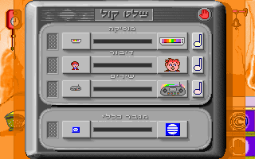
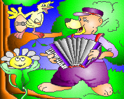
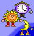
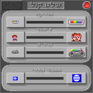

Bitmaps — game screens & sprite atlases (17)
Decoded 256-colour bitmaps. The big 320×200 ones are full game screens; smaller ones are sprite atlases or icons.
| Preview | File | Your note |
|---|---|---|
 |
hlp.bin.png
1×1 · 69 B
assets/bitmaps/hlp.bin.png
|
|
 |
igra.png
320×200 · 18.8 KB
assets/bitmaps/igra.png
|
|
 |
igra2.png
320×200 · 6.7 KB
assets/bitmaps/igra2.png
|
|
instr_b.png
46×49 · 739 B
assets/bitmaps/instr_b.png
|
||
 |
mus.png
320×200 · 11.2 KB
assets/bitmaps/mus.png
|
|
 |
mus1.png
320×200 · 14.0 KB
assets/bitmaps/mus1.png
|
|
notki.png
19×19 · 353 B
assets/bitmaps/notki.png
|
||
 |
pan_inst.png
320×200 · 14.9 KB
assets/bitmaps/pan_inst.png
|
|
pll.png
76×52 · 1.9 KB
assets/bitmaps/pll.png
|
||
press1.png
34×46 · 621 B
assets/bitmaps/press1.png
|
||
press_pr.png
37×34 · 718 B
assets/bitmaps/press_pr.png
|
||
 |
replay.png
320×200 · 10.8 KB
assets/bitmaps/replay.png
|
|
 |
shalat.png
320×200 · 12.8 KB
assets/bitmaps/shalat.png
|
|
timer.png
43×53 · 1.2 KB
assets/bitmaps/timer.png
|
||
 |
tmm1.png
206×165 · 15.6 KB
assets/bitmaps/tmm1.png
|
|
 |
tmunki.png
50×53 · 1.3 KB
assets/bitmaps/tmunki.png
|
|
 |
volume.png
184×184 · 4.2 KB
assets/bitmaps/volume.png
|